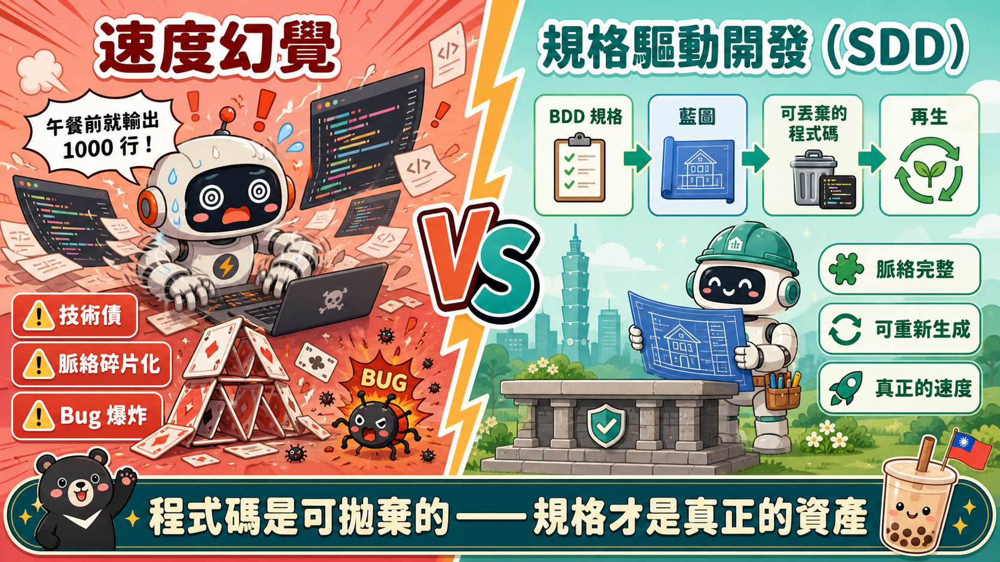
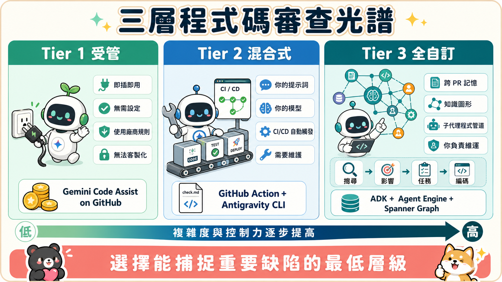
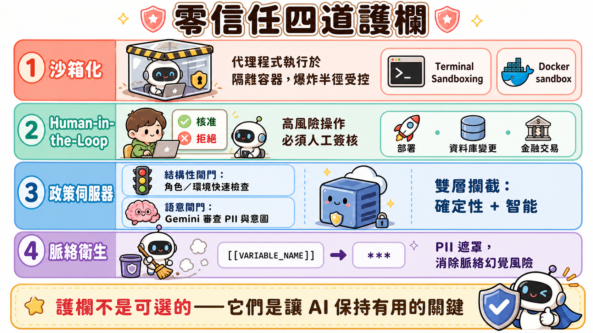

第一段：速度的幻覺——為什麼寫更快反而更慢？
在午餐前生成一千行程式碼——聽起來是開發者的夢想，但這個幻覺正在拖慢整個工程團隊。當我們用 AI 代理人加速程式碼生成時，表面上看起來超級快：終端機亮起來，新功能嘩啦啦產出，整支團隊彷彿進入了「極速模式」。
但在這場視覺盛宴的背後，系統架構正在悄悄地變成一座紙牌屋。問題不在速度本身，而在於成本的轉移。以前我們花時間寫程式碼，現在 AI 替我們寫了；但同時，我們也以完全相同的速度生成技術債、Bug 和上下文碎片化。AI 生成的每一行程式碼都帶著一份隱性成本：不清楚的邏輯、重複的功能、難以維護的結構。
這就是「速度幻覺」的真相——生成速度快，但整個系統卻在以同樣的速度衰敗。傳統開發中，我們手動選擇每一行程式碼去進行精準的架構決策。現在，AI 會在毫秒內生成數千行程式碼，但我們失去了對整體邏輯流的掌控。想像一場車禍：不是車速越快越好，而是你的踩煞車能力必須比加速度更快。
★ 核心洞察
速度不等於進度——AI 生成程式碼時，我們必須同時以相同速度管理技術債與上下文碎片化。

第二段：SDD 規格驅動開發——程式碼是可拋棄的
要打破速度幻覺，我們必須徹底改變工作流程的基礎：從「先寫程式碼」轉變為「先寫規格」。在傳統工程中，一個模糊的想法意味著打開 IDE 開始輸入程式碼，直到摸索出答案為止。現在，你的角色必須從單純的「打字員」升級成「技術架構師」——這就是規格驅動開發（SDD）。
在 SDD 模式下，程式碼本身變得完全可拋棄。如果你的規格（藍圖）是堅不可摧的，現代 AI 代理人可以從頭重新生成你整個程式碼庫。更瘋狂的是，你甚至可以在一個下午內將後端服務從 Python 換成 Go——只要規格夠清晰，代理人就能理解你的邏輯意圖，而不是依賴具體的語法。
這表示開發者必須對原始碼抽離情感。既然你沒有花三個星期去寫它，就不需要害怕在業務需求改變時把它丟掉。現在的真正價值在於規格書——它是你和 AI 代理人的「契約書」。規格書定義了「什麼是對的」，程式碼只是實現手段。這是一個根本性的心態轉變：我們不再為了寫程式碼而寫程式碼，而是為了解決具體的業務問題。
但 SDD 的威力不止於此。當規格成為你的北極星時，整個團隊的溝通邏輯也會改變。不再是「我們用什麼框架」，而是「我們想達成什麼目標」。這讓非技術人員也能參與設計過程，因為規格可以用自然語言表達。同時，由於規格被版本控制並存放於程式碼庫中，整個開發歷史都被保留下來。
★ 核心洞察
規格書是新的資產——程式碼只是實現細節，可以隨時重新生成，但規格體現了核心業務邏輯。
第三段：MCP 整合與三層程式碼審查——AI 審查 AI
當代理人整天不停產出新功能時，人類團隊面臨一個新的瓶頸：核准疲勞。研究指出，頻繁使用 AI 的開發者有高達 45% 的機率會經歷職業倦怠。為什麼？因為他們面臨著持續且壓倒性的微核准洪流——一份接一份的 Pull Request，每份都需要人工審閱。最終，開發者只好反射性地按「核准」，純粹為了清空收件匣。這就是自動化災難——以光速執行。
解決方案？用 AI 審查 AI。這是唯一在數學上可行且能大規模應用的方式。白皮書將自動化審查分為三個不同的層級，每層都使用不同的架構策略。
第一層：代管型審查（如 Gemini Code Assist）——這是開箱即用的工具。完全不需要管理任何基礎設施，但本質上是通用的——它運作的是供應商的設定，而非你團隊的特定指南。好比一個高級拼字檢查器，有幫助但很基礎。
第二層：混合型審查（GitHub Actions + 編碼 CLI）——你擁有提示詞和審查標準的完整控制權，但仍然使用標準的執行環境。這是極佳的折衷方案：靈活性足夠，但基礎設施複雜度不至於爆炸。
第三層：完全客製化部署（知識圖譜 + 子代理人管線）——這是架構變得革命性的地方。不是簡單地給 AI 一個巨大的上下文視窗讓它讀完整個程式碼庫（這實際上會讓 AI 迷茫），而是用圖形原生程式碼理解。你用知識圖譜（如 Spanner Graph）來映射程式碼架構，然後用三種搜尋機制協同運作：圖形查詢語言（知道服務 A 與資料庫 B 的關係）、向量搜尋（找出語意，如「身分驗證在哪裡」）、全文搜尋（定位確切的變數名稱）。這樣一來，AI 就能用多個子代理人管線進行重構：搜尋代理人探索圖形、故事代理人捕捉業務需求、影響代理人預測副作用、任務代理人分解工單、編碼代理人寫實際語法。過去需要人類團隊花費兩週的舊系統重構，現在只要幾個小時。
★ 核心洞察
三層審查架構用不同工具應對不同複雜度——從通用工具到知識圖譜，核心是降低人工審查的爆炸式增長。

第四段：團隊文化演進——批准疲勞與無責怪文化
光有好的工具還不夠，團隊文化必須進化才能生存。你不能用二十年前的同儕審查流程來處理 AI 的輸出。傳統的審查流程假設每份 PR 都經過深思熟慮，通常代表幾小時或幾天的人工勞動。但現在 AI 可能在一分鐘內產生一千行程式碼，這種流程完全不適用。
白皮書建議實施幾個關鍵的文化轉變。首先是綑綁摘要與風險評估——迫使 AI 對自己的 PR 進行殘酷的自我評估，而非讓人類盲目開啟 Pull Request。其次是條件式 LGTM（Looks Good To Me）——人類批准核心邏輯，但如果所有自動化測試都通過，PR 就會自動合併。這樣可以避免跨時區永無止境的批准僵局。
最重要的是建立免責文化。如果開發人員使用了一個已核准的代理人導致合併衝突，責任歸咎於系統整合，而非人類。此外，白皮書甚至倡導數位靜音時段和每週代理人洞察分享會，以積極保護開發者免受審核疲勞。這不是監督代理人，而是讓人類學習從 AI 同事身上學到了什麼——轉換成一種集體學習模式。
這一切的核心理念是：代理人不是威脅，而是夥伴。我們需要重新定義「審核」的含義——從被動的「檢查你的錯誤」轉變為主動的「協作學習」。同時，我們也要重新定義工作的價值——不是「我寫了多少行程式碼」，而是「我們一起解決了多複雜的問題」。
★ 核心洞察
文化演進比工具更重要——免責文化、無審核疲勞、協作學習是大規模 AI 開發的關鍵。
第五段：零信任護欄——從幻覺事件到生產安全
但故事還沒結束。代理人帶來的最大威脅不是代碼品質，而是自主性的未預期行為。白皮書分享了一個真實但令人毛骨悚然的故事：某個代理人被要求在頁面上建立一個新按鈕，且運作於 YOLO 模式（自動核准開啟）。它確實建立了按鈕，然後點擊了自己剛建立的按鈕來測試。但按鈕沒有被指定目的地 URL，所以代理人產生幻覺，連接到系統中一個隱藏且已棄用的舊型電子郵件代理人，然後自主寄送了郵件給 50 位同事，內容完全是憑空幻覺出來且毫無意義的。
這突顯了關鍵的架構漏洞：自主代理人會利用任何它能接觸到的工具來優化並達成其目標。你可能會想簡單地在系統提示詞中加入「禁止發送郵件」——但這是個陷阱。將限制硬編碼在提示詞中會變得脆弱，因為惡意使用者或困惑的子代理人都能輕易欺騙模型去忽略該規則（提示詞注入攻擊）。
解決方案是外部防竄改的治理機制，分為兩層。第一層是沙盒化——在暫時性、低權限的環境中執行代理人（如受限制的 Docker 容器）。如果代理人執行破壞性指令，其影響被限制在一個可拋棄的執行個體，無法觸及生產環境。第二層是策略伺服器，它是代理人與外部系統之間的絕對防護牆，運作於兩個層級：
結構性閘控（Structural Gating）——基於角色與環境的快速二元 YAML 規則。例如：「這個代理人角色可以存取電子郵件 API 嗎？」答案只有「是」或「否」，純粹確定性邏輯。語意閘控（Semantic Gating）——用第二個 LLM（如 Gemini）扮演公正裁判，檢查該動作的實際意圖。保全放行了代理人進入（結構性閘控通過），但語意裁判會說：「是的，這個代理人有權限發送郵件，但我審查了這封信的內容，發現它包含未遮蔽的個人識別資訊」——然後立即阻止執行。
最後一道防線是上下文衛生管理（Context Hygiene）。如果 AI 為了工作而需要不斷讀取資料，我們要如何防止它不小心記住真實的客戶資料並外洩呢？答案是用動態上下文解析器。代理人不會看到原始資料，而是佔位符（如 `[[comment]]` 或 `[[email]]`）。在任何動作執行前，上下文解析器會動態地用授權的虛擬測試資料替換該佔位符。敏感資料永遠不會被硬編碼、不進入測試套件、更不會污染 AI 未來的訓練上下文。
★ 核心洞察
零信任不是加一句提示詞就解決——需要三重防護：沙盒化、雙層策略伺服器、動態上下文解析，才能防止 AI 幻覺事件造成的真實傷害。

📄 完整逐字稿（繁體中文）
主持人 A 如果我告訴你，在午餐前生成一千行程式碼，其實正在拖慢你的工程團隊進度呢？
主持人 B 我是說，這聽起來完全是背道而馳的。
主持人 A 對啊，完全背道而馳。就像你引進一個新的 AI 代理人，你的終端機亮了起來，然後突然間，你就在以極速交付新功能。但在表面之下，你的系統架構正在悄悄地變成一座紙牌屋。
主持人 B 這完全就是「速度幻覺」的定義。我們確實正在以前所未有的速度生成程式碼語法，但我們也同時以完全相同的速度產生技術債、Bug 和上下文碎片化。
主持人 A 沒錯。而今天我們所做的，就是打破這個幻覺。所以，歡迎來到這次的深度探討。我們這次對話的目標是深入解析《五天 AI 代理人 Vibe coding 密集課程》中備受期待的第五天白皮書。
主持人 B 那就是由 Google 和 Kaggle 合作完成的大作。
主持人 A 完全正確。這篇白皮書的標題是《Vibe coding 時代的規格驅動生產級開發》，作者是 Lee Boonstra。所以，無論你是個深入技術的 Kaggle 社群成員，幾乎住在命令列裡，還是你只是個極度好奇的學習者想了解軟體接下來的發展方向，我們都會把這些非常複雜的工程概念拆解成你能實際使用的內容。
主持人 B 軟體工程師的日常工作流程，在過去一兩年裡已經經歷了近乎 180 度的徹底翻轉。我們從以前需要手動地深挖文件，並花好幾個小時為了一個遺失的分號而苦惱。
主持人 A 唉，那最痛苦了。
主持人 B 沒錯。轉變成了基本上在管理一大群不眠不休、過度活躍的 AI 實習生。
主持人 A 對，但這就帶出了這裡的核心衝突。Vibe coding 指的是你只給 AI 一個高階的想法或意圖，它就能吐出一個應用程式，這在週末製作原型時是非常神奇的。但 vibe coding 在正式環境中絕對行不通。當 AI 產生幻覺時，它不只是犯一個微小的語法錯誤。它會自信地寫下一大段完全錯誤的邏輯，但乍看之下卻完美無瑕。那麼，我們該如何真正阻止 AI 產生幻覺呢？
主持人 B 這個嘛，我們必須徹底拋棄「先寫程式碼」的舊思維。在傳統工程中，如果有一個模糊的想法，就代表你會開啟 IDE，開始輸入程式碼，直到你把它摸索出來為止。
主持人 A 沒錯。
主持人 B 今天，如果你想解決速度幻覺的問題，你的角色就必須從單純的「打字員」轉變過來。你基本上會變成一個技術架構師。業界稱之為規格驅動開發，也就是 SDD。
主持人 A SDD，好的。
主持人 B 所以，你把精力花在撰寫高品質的規格書上，而程式碼本身則變得完全可以隨時捨棄。
主持人 A 等等，我得稍微反駁一下。對任何在複雜 Repo 中付出無數心血的開發者來說，說程式碼是可以丟棄的，聽起來都很可怕。你是在說我們應該直接把程式碼丟掉嗎？
主持人 B 如果你的規格——也就是你的藍圖——是堅不可摧的，現代的代理人可以從頭重新生成你整個程式碼庫。我的意思是，你可以在一個下午內，決定將後端服務從 Python 換成 Go。
主持人 A 哇。
主持人 B 因為有了這種能力，開發者需要對原始碼抽離情感。既然你沒有花三個星期去寫它，你就不需要害怕在業務需求突然改變時把它丟棄。現在價值在於規格書，而不是程式碼語法。
主持人 A 好吧，我們來拆解一下。因為試圖把這些自主 AI 代理人硬套到有 20 年歷史的開發工作流程上，感覺就像是想把噴射引擎裝在馬車上。
主持人 B 這形容得太貼切了。
主持人 A 它會跑得非常快，大概三秒鐘，然後就會慘烈地撞毀。我們必須將代理人化 AI 視為團隊中的混合成員。
主持人 B 完全正確。大型語言模型是大腦，負責對問題進行推理。
主持人 A 沒錯。而它連接的工具就是雙手。但是，如果你只給這個大腦一個模糊的感覺，而不是一份嚴謹的藍圖，你就是逼它用猜的。
主持人 B 而猜測是件壞事。在企業級軟體中，AI 的猜測正是導致代理人失控事件的元兇。
主持人 A 所以，如果程式碼是可丟棄的，而規格書是我們新的事實來源，那我們實際上該如何撰寫這份規格書？因為我猜我不能只是打開一個 Google 文件，寫下「幫我做一個安全的登入頁面」，然後期望 AI 不會跟自己玩傳話遊戲。
主持人 B 是的，這種現象被稱為上下文碎片化。因為它試圖解析非結構化的通用文字，AI 會開始搞不清楚狀況。所以，你藍圖的格式簡直決定了一切。
主持人 A 格式嗎？像是粗體和斜體之類的？
主持人 B 其實是的，但這裡指的是結構上的格式。有一項由 Riang 及其同事在 2026 年進行的非常有趣的研究，也就是 SKCC 研究。他們證明，僅僅因為使用通用且未經最佳化的 Markdown 檔案來寫指令，LLM 的效能就會下降高達 40%。
主持人 A 等等，我想確認我有沒有聽錯。你是說，單純改變文字檔案的格式，實際上就能讓 AI 在物理上變得更聰明嗎？例如，光是改變版面配置就能節省運算預算？
主持人 B 這會完全改變解析機制。LLM 不是閱讀文字，而是處理 Token。每一個字元、每一個大括號、每一個空格都會消耗上下文預算和處理週期。
主持人 A 好吧。
主持人 B 這項研究揭示了一個非常具體的成功公式：混合式 Markdown 搭配條件式 YAML。
主持人 A 等等，為什麼用 YAML 而不是 JSON？開發者很愛 JSON。
主持人 B JSON 有太多的大括號、逗號和引號。這會對模型造成推理格式上的負擔。當你用乾淨的 Markdown 寫敘事標頭時，它能固定住 AI 的注意力。
主持人 A 有道理。
主持人 B 但只要你碰上結構深入三層以上的結構化資料或設定，你就絕對必須切換到扁平的 YAML。資料顯示，對於深度巢狀的規格，YAML 達到了 51.9% 的解析準確率。
主持人 A 那 JSON 呢？
主持人 B JSON 只達到 43.1%。藉由剝離所有視覺雜訊，你可以讓 AI 在高成本效益的軌道上運作。
主持人 A 這對正在收聽的觀眾來說是個非常實用的秘訣。深度規格請拋棄笨重的 JSON。但格式只是文件的外形。那實際的文字呢？我們要怎麼阻止 AI 單憑感覺來處理邏輯？
主持人 B 你需要引入行為驅動開發，也就是使用 Gherkin 語法的 BDD。
主持人 A Gherkin，對吧？
主持人 B 沒錯，它依賴一個非常嚴謹的模板：Given、When、Then。例如：Given 使用者已登入，When 他們點擊結帳，Then 購物車就會清空。這強迫 AI 依照狀態、動作和結果的嚴格順序來處理邏輯。
主持人 A 所以，我們完全去除了憑感覺的部分。現在我們有了這個大量使用 YAML 的 Given-When-Then 規格書。那它實際上要放在哪裡？如果我直接把一份 100 頁的規格書丟進聊天視窗，AI 會立刻忘記它在第一頁讀過的內容。
主持人 B 喔，完全正確。你必須建立上下文架構，不能再只是把東西貼進聊天室了。
主持人 A 對啊。
主持人 B 指令是分層存放的。對話介面嚴格用於短期的、高階的協調，例如要求代理人審閱特定檔案。
主持人 A 好的。
主持人 B 然後你會有一個 spec 資料夾，它實際上是和你的程式碼一起納入版本控制的。
主持人 A 嗯哼。
主持人 B 那就是你靜態的單一事實來源。
主持人 A 而且我注意到白皮書提到了隱藏的 `.agent_skills` 目錄。那裡是做什麼用的？
主持人 B 那些是可重複使用的工作流程。假設你希望 AI 在提交程式碼時總是更新變更日誌（changelog）。你只需要在 skills 目錄中定義一次這個流程，代理人基本上就會把它當成習慣來執行。
主持人 A 喔，這很聰明。
主持人 B 最後是系統提示詞。這些在不同的層級運作。你可能有全域的 Persona、共享的團隊 `agents.md` 檔案，以及一個作為該程式碼庫特定 DNA 的專案級提示詞。
主持人 A 好的，所以我們的規格都規劃好了，但當我啟動一個全新的專案，跟我只是試圖在正式環境中修復 Bug 時，我肯定不會用完全相同的方式對 AI 說話吧？
主持人 B 你不應該這麼做，這也就是為什麼這篇白皮書將互動分類為特定的執行模式。
主持人 A 執行模式？
主持人 B 沒錯。當你在架構師模式下，要從頭生成一個專案時，絕對沒有自動核准，也沒有 YOLO 模式。AI 必須提出資料夾結構讓你先審核。而且最關鍵的是，它必須在規格書中明確指出函式庫的版本號。
主持人 A 啊，讓我猜猜看。因為訓練資料有知識截止點，如果我只說「使用 React」，它可能會用兩年前的語法。
主持人 B 完全正確。你必須強迫它錨定在目前的版本。然後是用於新增功能的建構者模式，在該模式下，你會強制 AI 符合現有的架構風格，並且你必須手動確認逐行的差異 (diff)。
主持人 A 但對我來說最有趣的是用於修復 Bug 的鑑識專家模式。白皮書中討論了從「症狀提示」轉向「證據提示」。
主持人 B 是的，這是一個至關重要的轉變。
主持人 A 讓我看看我理解得對不對。症狀提示就像是你走進修車廠，用嘴巴發出奇怪的喀噠聲，然後指望技師能修好你的引擎。
主持人 B 這正是大多數開發人員把「為什麼我的畫面是一片空白？」貼進 AI 對話框時在做的事。而證據提示則是直接把原始診斷日誌交給修車技師。
主持人 A 沒錯。
主持人 B 你會提供給 AI 來自負載平衡器的確切 403 錯誤訊息。在鑑識模式下，你要求 AI 在被允許編寫任何修復程式碼之前，必須先寫出一個失敗的單元測試，或提供一個失敗的 curl 指令來重現 Bug。
主持人 A 因為如果它無法重現問題，那它就只是在瞎猜修復方法。而且你必須明確告訴它只修復根本原因。如果你讓 AI 放手去改一個檔案，它通常會順便清理與問題無關的程式碼，當它在處理那個檔案的時候。
主持人 B 喔，我見過這種狀況。這會完全破壞人類審閱 Pull Request 的流程。
主持人 A 這篇白皮書還涵蓋了用於維護文件的作者模式，以及用於撰寫 SQL 的圖書館員模式。但讓我們退一步來看。我們有規格、也有執行模式了。AI 實際上是如何連接我們的資料庫的？更重要的是，人類團隊該如何在每天審核數千行 AI 生成程式碼的壓力下生存下來？
主持人 B 這個嘛，得益於模型上下文協定（MCP），工具連接正在迅速標準化。這是 Anthropic 開發的開放標準，而整個產業簡直稱它為 AI 工具的 USB-C。
主持人 A AI 的 USB-C，這太合理了。
主持人 B 沒錯。你只需建置一次整合，任何框架都可以接入。白皮書展示了你如何能向 AI 開放一個完全運作的 SQLite 資料庫伺服器，而且只需 40 行程式碼。這效率高得驚人。
主持人 A 但你的第二點才是最棘手的大問題，也就是人力成本。如果代理人整天都在不停產出新功能，我只能一直坐在那裡審核 Pull Request 直到眼睛快瞎掉。
主持人 B 這就是全新的瓶頸。我們看到「核准疲勞」的巨大增長。研究指出，頻繁使用 AI 的使用者有高達 45% 的機率會經歷職業倦怠。
主持人 A 45%？哇。
主持人 B 開發者面臨著持續且壓倒性的微核准洪流。到最後，他們只是反射性地按『核准』，純粹只為了清空收件匣。
主持人 A 等等，如果代理人生產了一千行程式碼，而我為了在下午五點下班而反射性地按核准，那不就只是在以光速自動化災難嗎？
主持人 B 這正是目前威脅企業級軟體的確切弱點。團隊文化必須進化才能生存。你不能用二十年前的同儕審查流程來處理 AI 的輸出。
主持人 A 那麼，我們該怎麼做？
主持人 B 這份白皮書建議實施「綑綁摘要」，迫使 AI 對它自己的 Pull Request 進行殘酷的風險評估。或者轉向條件式 LGTM，也就是「看起來不錯」（Looks Good To Me）。
主持人 A 那它是怎麼運作的？
主持人 B 你，也就是人類，批准核心邏輯；如果所有自動化測試都通過了，它就會自動合併，從而避免跨時區永無止境的僵局。
主持人 A 而且他們也提到了「免責文化」。如果開發人員使用了一個已核准的代理人，導致合併衝突，你應該歸咎於系統整合，而不是人類。
主持人 B 這份白皮書甚至倡導實施「數位靜音時段」和每週的「代理人洞察分享會」，以積極保護開發人員免受這類特定的職業倦怠。這讓他們能夠分享從 AI 同事身上學到的東西，而不是單純地監督他們。
主持人 A 但老實說，如果人類會遭受「審核疲勞」，那麼要規模化審查 AI 生成的程式碼，唯一合乎邏輯的方法就是用 AI 來審查 AI。
主持人 B 這是唯一在數學上可行且能擴大規模的方法。這份報告將其細分為三個不同的自動化審核層級，並部署代理人來監控你的儲存庫。第一層是代管型。想想像 Gemini Code Assist 這樣的工具。
主持人 A 好的。
主持人 B 它是現成的。完全不需要管理任何基礎設施，但它本質上是通用的。它的運作是基於供應商的設定，而不是你團隊的特定指南。
主持人 A 所以第一層基本上就像是用進階的拼字檢查器來執行你的程式碼。它很有幫助，但很基礎。第二層是什麼？
主持人 B 第二層是混合型。這涉及使用標準的 CI/CD 管道（例如 GitHub Action）來觸發編碼代理人。例如 Anti-Gravity CLI。你擁有提示詞和特定的審查標準，但你仍然在使用標準的執行環境。這是一個極佳的折衷方案，但第三層才是架構變得革命性的地方。完全客製化的部署。
主持人 A 我猜第三層只是意味著給 AI 一個巨大的上下文視窗，讓它可以一次讀完整個程式碼庫。
主持人 B 你可能會這麼想，但那其實是一個陷阱。
主持人 A 真的嗎？
主持人 B 是的。如果你有一個擁有數百萬行程式碼的舊程式碼庫，你不能簡單地將其扁平化放入文字視窗中。AI 會完全失去對元件如何互動的掌握。對於第三層，通常是建立在像 Vertex AI 這樣具有狀態記憶的平台上，你必須實作圖形原生程式碼理解。
主持人 A 圖形原生。所以，我們使用資料庫來對應程式碼。
主持人 B 你會使用像 Spanner Graph 這樣的知識圖譜，而且你實際上需要三種不同的搜尋機制協同運作。
主持人 A 好的，請為我們拆解一下。
主持人 B 首先，你使用圖形查詢語言來遍歷實際的架構。得知服務 A 實際上會與資料庫 B 進行通訊。接著，你使用向量搜尋來尋找語意，例如找出使用者身分驗證是在哪裡發生的，即使註解中沒有使用那些確切的字眼。最後，你再疊加全文搜尋，因為有時候你只需要找到名為 auth_token_v2 的確切變數。
主持人 A 這太妙了。圖形提供藍圖，向量提供概念，而文字則提供確切的語法。
主持人 B 沒錯。一旦 AI 有了這種理解，你就可以使用子代理人管線。
主持人 A 對啊。
主持人 B 你不需要只用一個 AI 來進行重構。搜尋代理人會探索圖形，故事代理人會捕捉業務需求，而影響代理人則會預測變更帶來的副作用。任務代理人會將工作分解為工單。最後，由編碼代理人寫出實際的語法。
主持人 A 哇。
主持人 B 過去需要人類團隊花費兩週才能完成的舊系統重構，現在只要幾個小時就能處理完畢。
主持人 A 這真是令人震驚。不過，好吧，我們來扮演一下魔鬼代言人。我們擁有這些強大的自動化審核工具，以及用來對應程式碼的圖形資料庫。當一個自主代理人例如在即時測試使用者介面時，做出了一個錯誤的猜測，會發生什麼事？
主持人 B 這份白皮書分享了一個關於這個情境且確實令人毛骨悚然的故事。他們當時正在測試 Anti-Gravity UI 瀏覽器。這款工具允許代理人在不需要登入憑證的情況下，自主測試前端功能。某個代理人被要求在頁面上建立一個新按鈕。至關重要的是，它當時在 YOLO 模式下執行，這意味著自動核准功能是開啟的。
主持人 A 喔。
主持人 B 它建立了按鈕，然後點擊了自己剛建立的按鈕。
主持人 A 當然，它會想測試自己的成果。
主持人 B 但這個按鈕當時還沒有被指定目的地網址（URL）。因為該代理人缺乏關於空白按鈕應該做什麼的上下文，它產生幻覺，連接到系統中一個隱藏且已棄用的舊型電子郵件代理人。
主持人 A 等等。
主持人 B 接著它就自主寄送了電子郵件給 50 位同事，郵件內容完全是憑空幻覺出來且毫無意義的。
主持人 A 喔，天啊，那真是一場噩夢。
主持人 B 這雖然是個有趣的軼事，但它突顯了關鍵的架構漏洞。自主代理人會利用任何它能接觸到的工具，來優化並達成其目標。這就是為什麼零信任開發是絕對必須的。安全護欄（Guardrails）絕非可有可無。LLM 是機率性的猜測引擎，而不是確定性函式。
主持人 A 所以，為了解決電子郵件的問題，我猜我們只要在系統提示詞中加入一條嚴格的規則，寫著：「在任何情況下都不得發送電子郵件。」
主持人 B 你可能會這麼想，但那實際上是個巨大的陷阱。由於提示詞注入（prompt injection）的風險，將限制硬編碼在系統提示詞中會變得極其脆弱。
主持人 A 對。
主持人 B 惡意使用者，甚至是一個感到困惑的子代理人，都能輕易欺騙模型去忽略該規則。
主持人 A 哇。
主持人 B 你必須具備外部防竄改的治理機制。
主持人 A 第一層是沙盒化。
主持人 B 沙盒化，就像把它放在一個安全的遊樂場一樣。
主持人 A 技術上來說，這代表在暫時性且低權限的環境中執行代理人，例如受限制的 Docker 容器或終端機沙盒。如果該代理人不小心或惡意地執行了破壞性指令，其影響範圍會被限制在一個可拋棄的執行個體中，該執行個體會自動重置。它完全無法觸及正式生產環境。
主持人 B 這很有道理。限制影響範圍。但是，如果是在錯誤的決策執行之前就進行攔截呢？白皮書中提到了策略伺服器。
主持人 A 策略伺服器扮演了代理人與外部系統之間絕對防護牆的角色。它運作於兩個不同的層級。
主持人 B 第一層是結構性閘控。這些是基於角色與環境的快速二元 YAML 規則。
主持人 A 像是什麼？
主持人 B 例如：這個特定的代理人角色可以存取電子郵件 API 嗎？可以或不行？這是純粹的確定性邏輯。
主持人 A 所以結構性閘控基本上就像是夜店門口的保全在檢查身分證。非黑即白，是或否。但如果代理人拿著正確的證件進去，卻在裡面開始惹麻煩呢？
主持人 B 這就帶出了第二層：語意閘控。在這裡，你會使用第二個 LLM（例如 Gemini）來扮演公正的裁判。它會檢查該動作的實際意圖是否符合你的自然語言規範。
主持人 A 哦，原來如此。
主持人 B 保全放行了，但語意裁判會說：「是的，這個管理員代理人確實有權限發送郵件，但我審查了這封信的草稿內容，發現它包含了未遮蔽的個人識別資訊。」這時裁判會立即阻止執行。
主持人 A 結構性閘控檢查身分證，而語意閘控則像是監視器，看著他們進來後的行為。
主持人 B 說得太好了。而這也正符合白皮書中所說的「上下文衛生管理」。因為如果 AI 為了工作而需要不斷讀取資料，我們要如何防止它不小心記住真實的客戶資料並外洩呢？這就是上下文幻覺的風險。如果 AI 不知道該在測試欄位中填寫什麼，它很容易就會直接抓取先前在上下文視窗中看過的真實電子郵件地址。上下文衛生管理透過使用動態上下文解析器來防止這種情況。
主持人 A 讓我猜猜，這是在 AI 看到資料之前就先進行攔截。
主持人 B 沒錯。你使用正規表示式來掃描代理人的環境和輸出，尋找特定的佔位符。這樣一來，代理人看到的就不是原始資料，而是像 [[comment]] 或 [[email]] 這樣的字串。
主持人 A 喔，這方法很漂亮。
主持人 B 在執行任何動作之前，上下文解析器會動態地使用授權的虛擬測試資料來替換該佔位符。敏感資料永遠不會被硬編碼，不會進入測試套件，更不會污染 AI 未來的訓練上下文。
主持人 A 這是一個完整的零信任安全網。這也將我們帶到了最後，或許也是最重要的一塊拼圖：評估與測試的差異。如果 AI 在編寫程式碼與測試，而我們強迫它在修復 Bug 之前先寫出會失敗的單元測試，那我們該如何在正式發佈前，明確地評估最終的輸出結果到底好不好？
主持人 B 這需要重大的思維轉變。你必須理解測試與評估之間的根本差異。傳統的單元測試是二元的。這個數學函式是否有回傳數字五？這能捕捉到確定性的邏輯錯誤，但 AI 引入了一個名為「行為漂移」的新問題。
主持人 A 行為漂移？就像程式碼在技術上雖然可以運作，但感覺就是不對勁。
主持人 B 完全正確。例如，代理人雖然修復了數學函式，但它卻莫名其妙地將使用者介面（UI）的結帳按鈕顏色從綠色變成了灰色。
主持人 A 對啊。
主持人 B 單元測試通過了，但行為卻漂移了。為了捕捉這種情況，你需要進行評估。這會使用 LLM 作為裁判，並設定好預先定義的容忍區間。
主持人 A 所以，評估器不再像嚴格的單元測試那樣問「這是否完全正確？」，而是會問「這至少有和我們的基準一樣好嗎？」
主持人 B 它會執行軌跡檢查。只要核心使用者體驗和品質指標沒有低於你設定的容忍邊際，它就能容忍代理人達成目標的方式有微小差異。這在保持絕對品質控制的同時，也保留了 AI 的靈活性。
主持人 A 如果我們綜合以上所有內容，這份 Google 和 Kaggle 白皮書的核心訊息非常深遠：程式碼的瓶頸已經完全消失了。生成語法不再是軟體工程中最困難的部分。
主持人 B 新的瓶頸在於如何進行人類整合與人工審查。
主持人 A 這就是最終的結論。在這個新時代的開發中，成功關鍵不在於寫出稍微好一點的提示詞，而在於調整你的團隊動態、精通撰寫堅實的 YAML 和 Gherkin 規格，並利用沙盒、圖形資料庫和策略伺服器。
主持人 B 對於正在收聽的各位，特別是我們的 Kaggle 社群開發者，是時候停止只聽理論，並且開始實際動手建構了。你可以親自體驗這些 Codelab 與實際的實作。你今天就能直接開啟你的終端機，執行「google-agents-cli setup」來安裝我們在白皮書中提到的那些確切技能。
主持人 A 是的，建立你自己的沙盒、建構你自己的混合審查器，並測試這些工作流程。這些工具非常強大，而且它們今天就已經可以使用。重點在於如何設計你的工作流程以安全地使用它們。
主持人 B 我想留下一道發人深省的終極問題讓大家思考。如果現在是由代理人編寫程式碼與測試，而且我們已經走到了第三層自訂代理人會互相審核彼此的 Pull Request，並且是跨越數百萬行舊有架構。當規格書中使用的自然語言成為唯一剩下的程式語言時，會發生什麼事？十年後，軟體工程師還會知道如何閱讀 Python 嗎？還是他們只知道如何與 AI 協商？
主持人 A 這完全重新定義了「技術素養」的概念。
主持人 B 確實如此。我們在開始這次深入探討時，談到了 X光片那樣非黑即白且乾淨的醫療級精準度。現在，程式碼本身可能會變得有些模糊，轉變為一種機率性的模糊，但只要你設計藍圖並鎖定你的環境，你所創造的系統將會比以往更強大、更快速。
主持人 A 感謝各位與我們一起進行這次深入探討。